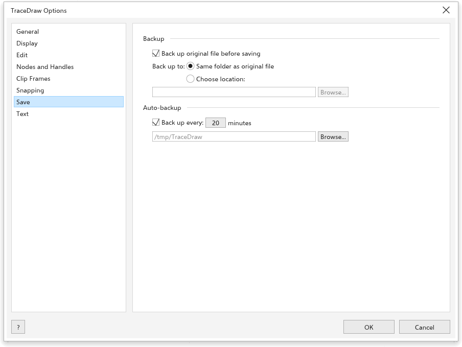
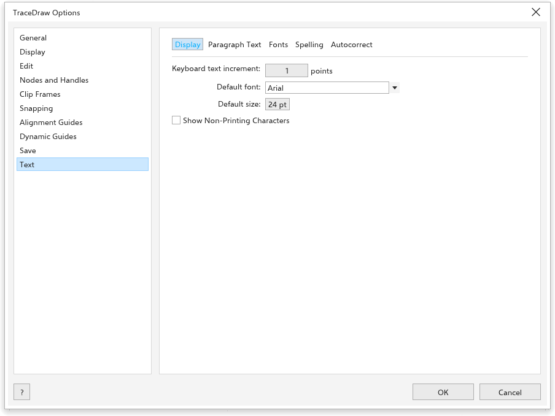

TraceDraw-opties
Extra > Opties > TraceDraw (Ctrl+J) stelt in hoe het programma werkt. Kies een pagina in de lijst links.
Algemeen

- Bij het starten van {app}: het welkomstscherm tonen, een nieuw document beginnen, of het laatst bewerkte document openen.
- Dialoogvenster Nieuw document weergeven (aan): om de instellingen van een nieuwe tekening vragen; zie Een tekening maken.
- Het opstartscherm weergeven bij het starten (aan).
- Use hardware acceleration (aan): tekent het venster met de grafische kaart die ernaast is gekozen (Fastest available in het begin); uit, met de softwarerenderer van de computer. Het geldt vanaf de volgende start. Als het venster zo niet opent, start TraceDraw opnieuw met de softwarerenderer, daarna met OpenGL, en onthoudt wat werkte.
- Niveaus voor ongedaan maken: hoeveel stappen u ongedaan kunt maken (in het begin 150).
Weergave

- Proefkleuren: kleuren tonen zoals ze worden afgedrukt.
- Knopinfo weergeven (aan), Selectiekader verbergen voor curvegereedschappen en Knooppunten volgen inschakelen (uit: als dit aan staat, kan het gereedschap Selecteren de knooppunten van een geselecteerde curve slepen).
- Voorbeeld op volledig scherm: Paginarand weergeven.
- Standaardactie voor muiswiel: Zoomen (in het begin) of Schuiven.
- Liniaalkalibratie: houd een liniaal tegen het scherm en wijzig de Schermresolutie totdat de streepjes overeenkomen, zodat zoom 100% echte maten toont. Opnieuw instellen zet 96 terug.
Bewerken

- Hoekbeperking: de stap van Ctrl bij draaien en tekenen (in het begin 15 graden).
- Tekenprecisie: het aantal decimalen op de eigenschappenbalk en de statusbalk (in het begin 3).
- Visibility of inactive objects (in het begin 20%) en Double-click to activate focus mode; zie Focusmodus.
Knooppunten en grepen

- Grootte van knooppunt: klein, middel of groot.
- Vorm van knooppunt voor knooppunten van het type Scherp, Vloeiend en Symmetrisch.
- Curverichting weergeven tijdens bewerken.
- Ringen voor het afronden van hoeken op curveknooppunten weergeven (Vormgereedschap).
- Kleuren: de Hoofdkleur van geselecteerde knooppunten en grepen en de Secundaire kleur.
- Niet-geselecteerde knooppunten gevuld weergeven (Ctrl+Shift+G).
Uitsnijkader

- Nieuwe inhoud automatisch centreren: Als de inhoud volledig buiten het kader ligt (in het begin), Altijd of Nooit.
- Lijnen weergeven in lege uitsnijkaders (aan).
Zie Objecten in een uitsnijkader plaatsen.
Kleven

- Kleven aan objecten (Alt+Z), Kleven aan pagina, Kleven aan hulplijnen, Kleven aan raster, het basislijnraster en Kleven aan pixels.
- Kleefstraal (in het begin 10 pixels).
- Markeringen van kleeflocaties weergeven en de Scherminfo.
- Modi: de punten waaraan objecten kleven, met Alles selecteren en Alles deselecteren.
Zie Kleven.
Opslaan

- Back-up: Een back-up van het originele bestand maken voor het opslaan (aan) bewaart het vorige bestand als
backup_of_<name>, Back-up maken naar de Dezelfde map als het originele bestand of een gekozen plaats. - Automatische back-up (aan): Back-up maken elke 20 minuten, naar een tijdelijke map of een gekozen plaats. Na een crash worden de back-ups aangeboden; zie Automatische back-up en herstel.
Tekst

De pagina heeft vijf tabbladen.
- Beeldscherm: Stapgrootte tekst via toetsenbord (hoeveel Ctrl+8 en Ctrl+2 de geselecteerde tekst groter en kleiner maken, 1 punt), Standaardlettertype en Standaardgrootte van nieuwe tekst, en Niet-afdrukbare tekens weergeven.
- Text units pt, mm, cm, in, px…
- Paragraph Text: Tekstkaders weergeven, Woordafbreking gebruiken en de Hyphenation patterns (ingebouwd, of een afbreekwoordenboek voor uw taal).
- Lettertypen: Show recently used fonts bovenaan de lettertypelijsten, het Number of recently used fonts (5, tot 20) en de Font sample size.
- Spelling: Woorden met cijfers negeren, Woorden in hoofdletters negeren en Add corrections to Autocorrect, zodat een woord dat u in de spellingcontrole verbetert de volgende keer tijdens het typen wordt verbeterd; en de Dictionaries die ze gebruikt, zie Woordenboeken.
- Autocorrectie: wat tijdens het typen wordt verbeterd; zie AutoCorrectie.